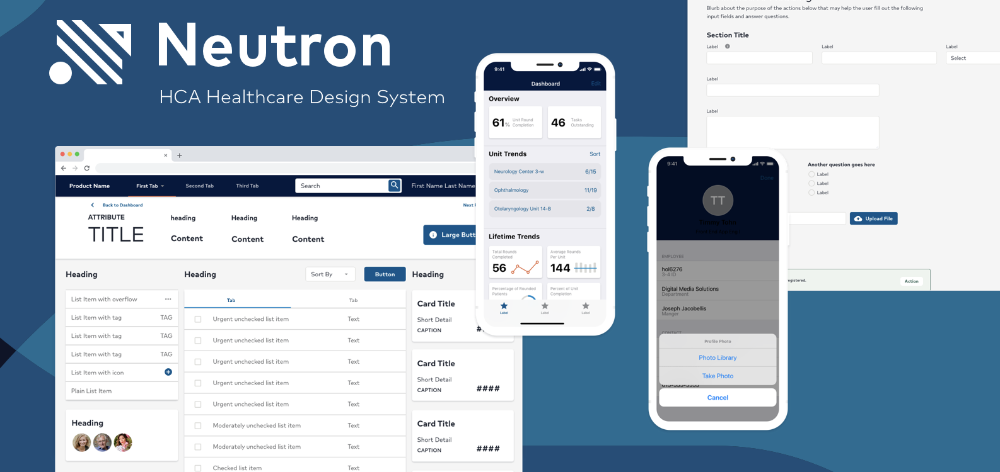
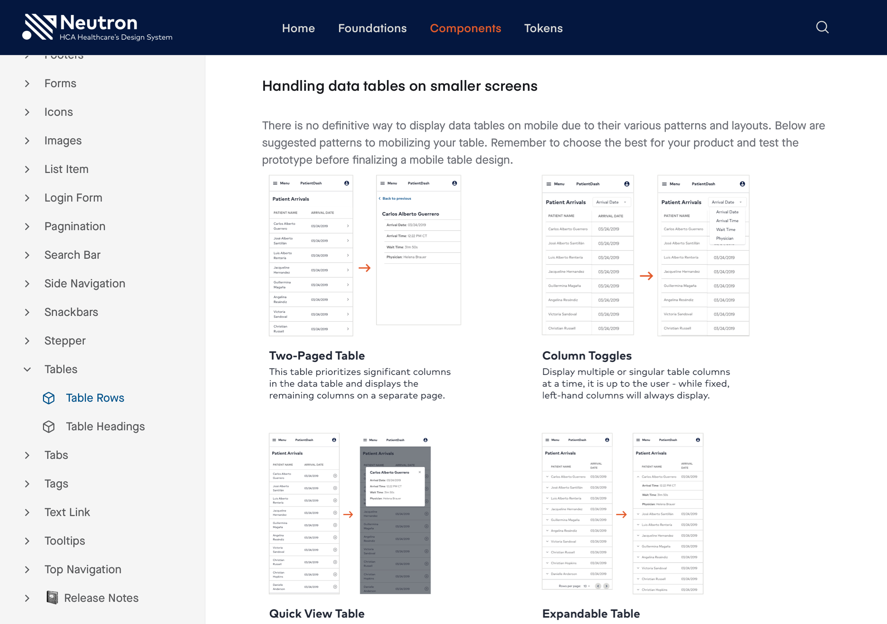
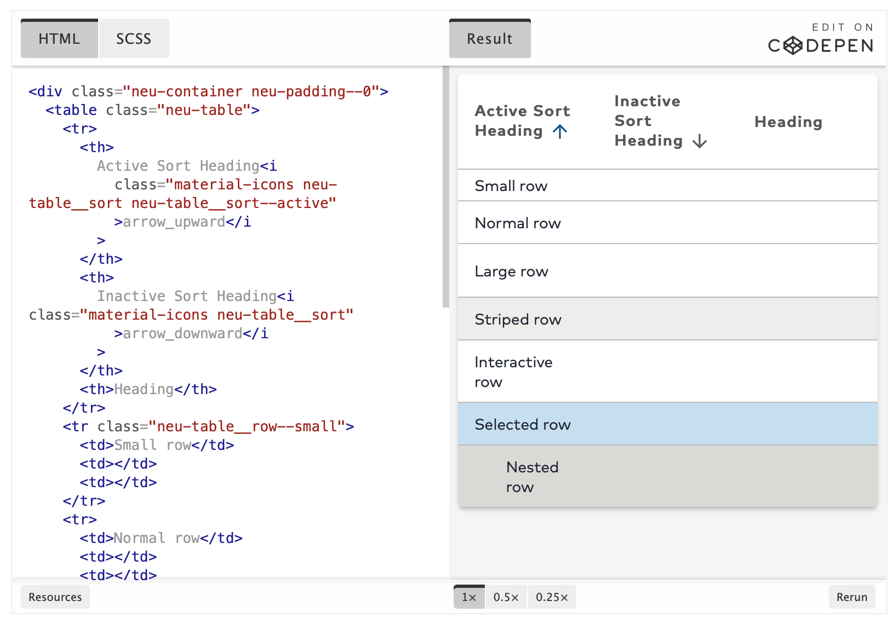
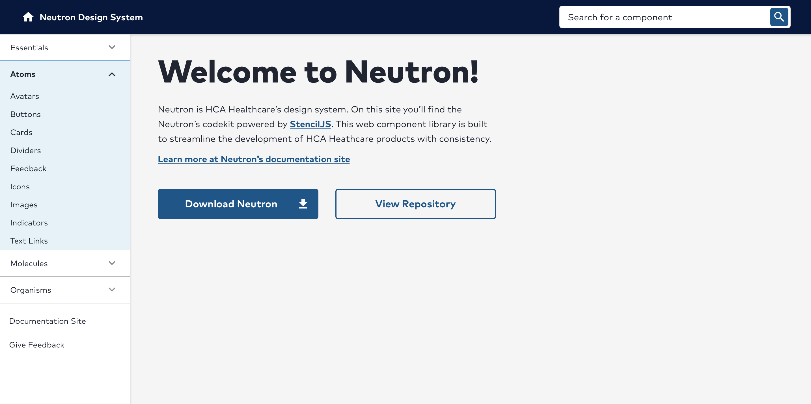
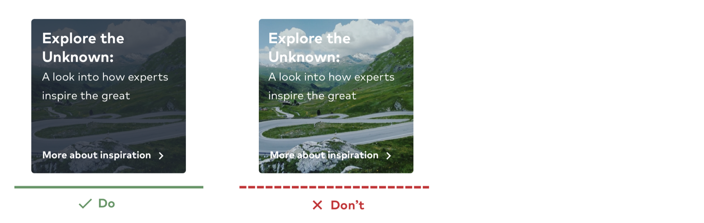
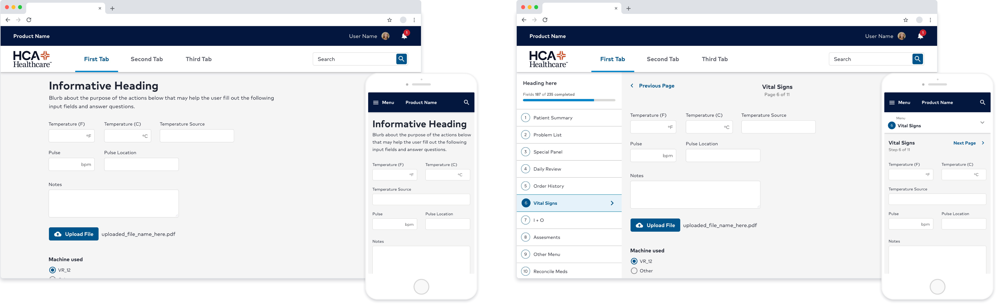
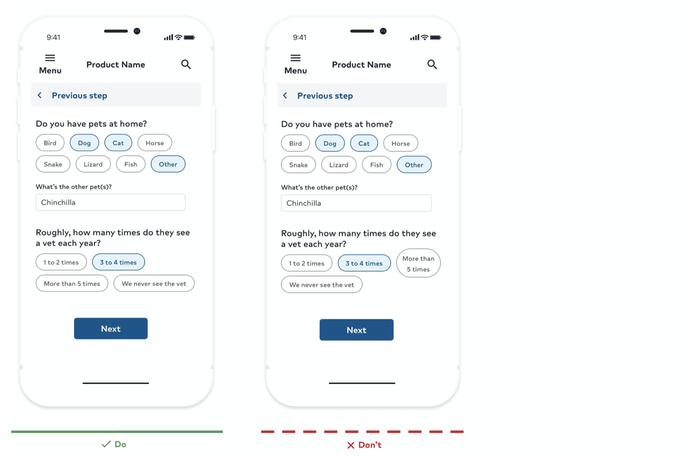
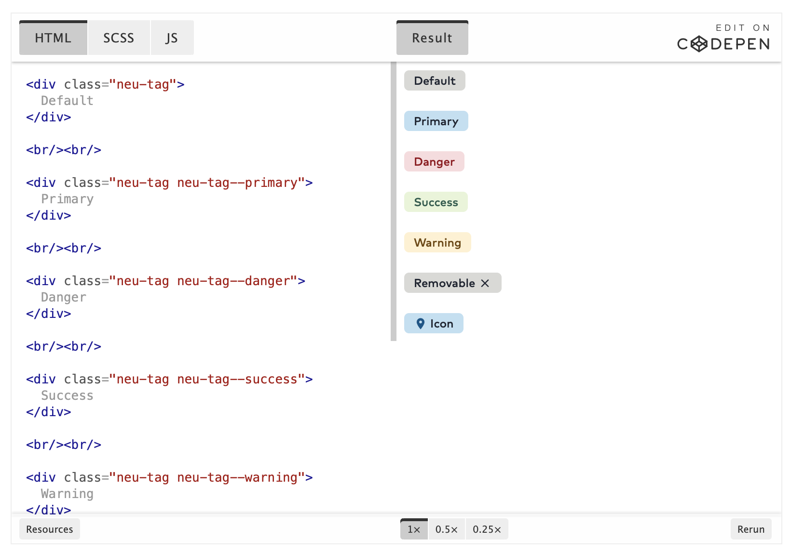
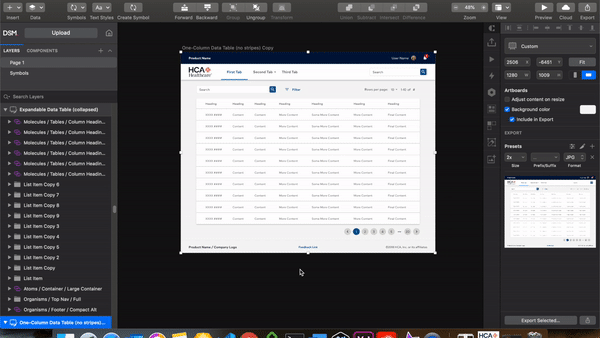
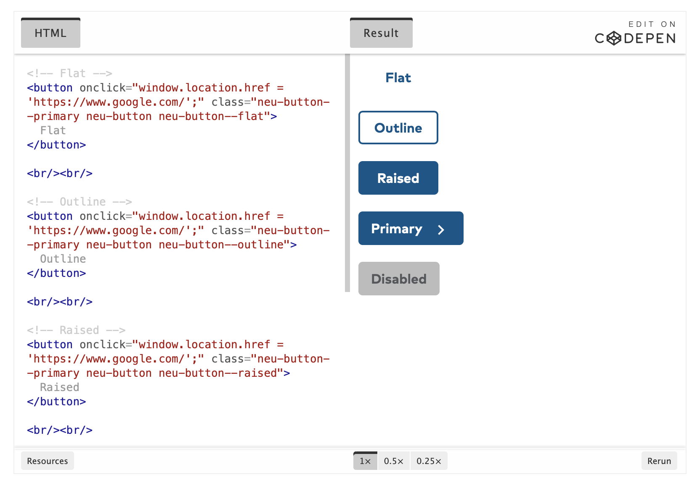

May 2020
The HCA Design System: Neutron
Note: Some information has been intentionally withheld or blacked out for confidentiality compliance.
Preface
I know what a design system is, take me to Neutron things!
What is a design system and why have a team dedicated to
maturing it? A design system is a collection of components
within a brand family or style guide equivalent. The system is
shared amongst designers and developers to streamline their
workflow, create company-wide collaboration and manage
consistency. With a design system comes research, continual
advancements and front-end engineering.
The best way to explain it is LEGOs! There is a massive amount
of pieces that go into building the Millennium Falcon out of
LEGOs, for instance. These pieces are differentiated by colors,
shapes and sizes. The Falcon wouldn't look right if it were
built with a rainbow of parts, would it? Especially in the
foreground of
gunmetal and dark-toned palettes. I'll admit, the image below is quite impressive. But the
time, effort and money taken to complete it does not meet its
potential.
Image courtesy of Reddit
The Millennium Falcon may still fly but it would be hardly
recognizable. The same goes for a digital presence. A company
with digital products built from an inconsistent UI would, as
well, be hardly recognizable.
A design system is similar to having an organized collection of
LEGOs to use for a variety of gadgets.
Image courtesy of Brad Frost and adapted from Wolfram Nagal's "Multiscreen UX Design"
Along with consistency comes time. An elongated project roadmap would be required to forage all of the right components in assembly of the Millennium Falcon. Wouldn't it be convenient to have a pre-defined set of pieces unique to constructing the Falcon? To have all of the integrants properly colored and sorted with directions on how to use them? Exactly, I thought so too. Hence, a design system.
Going atomic
If you've never heard of atomic design, bookmark Brad Frost's Atomic Design structure and deep-dive it later. Essentially, it breaks down a design system of components into levels for easier implementation and organization. The chunking method at its finest! Atoms are the smallest (let's not go sub-atomic right now). Molecules are the middle-ground and often made up of atoms. Finally, organisms are the largest components created by atoms and molecules.

It's a component-centered approach that provides easier comprehension for designers and a more structured system for developers. It's basically built off of itself! That's some cool beans.
Neutron
Neutron has placed me on a team of rockin' individuals who advocate software design, human-computer methodologies and the psychology about why interface designs are the way that they are.

The responsibility of educating colleagues about designing applications can be daunting and refuted by others. However, I love this practice and embrace it as an opportunity to learn more about the cognitive psychology of interface design and how to best supply research in support of any design decisions made.
My roles on the Neutron squad
- Component-centered research. I once heard "Design without data is simply an opinion." This is more so emphasized when business partners or clients begin to question design decisions. Market analyses, A/Bs, usability testing, user surveys and pattern discovery result in the informative ability to justify our design system. Research also gives us as designers the direction to move forward.
-
Documentation. We know how important
documentation is to the end-users of our design system. I'll
talk more about it in the following section. Leveraging the
above component-centered research and feedback from our user
surveys, we crafted a documentation site that is already
making a difference. As Neutron grows, the more necessary it
is to have an organized, educational space in which it is
dedicated.
 -
Design system rollout to existing products.
Administering 1:1's and auditing current applications takes
time but is extremely satisfying. It's a serious form of
meditation! After re-skinning a product with Neutron, there is
unanimous acclamation. A visual representation of what an app
could look like can quickly get business and developers on
board for adapting the design system. Below is a complete
website overhaul leveraging the Neutron design system if you'd
like to read more.
 HCA Healthcare Careers site case study
HCA Healthcare Careers site case study
- Consulting. Neutron is being implemented across the company and even by third-party vendors! This is very exciting. We engage in feedback reviews for these "Neutronees" to help guide the use of the kit, design implementation and accessibility. Watching the wave of Neutron continuously expand to reach company-wide products is incredible.
-
Bridge between design & development. It's
important that Neutron's codekit adheres to the design
system's guidelines including anatomy, usage and interactions.
I had a blast setting up Neutron's components in
CodePen to
demonstrate the animation and structure of the components.
These CodePen snippets now proudly live within our
documentation site. (Below is just an image, sorry!)
 -
Initial codekit builder & current co-creator.
Neutron's development library began as an HTML/CSS/JS kit. We
built through version 1.2 of Neutron's responsive web system
until coming to the realization that there is a missed
opportunity, per se, in an HTML kit. While many developers
were using the library and established an engaged community
around Neutron Dev, framework developers using React or Vue or
Angular were at a loss and suffered from code bloat when
implementing Neutron.
They needed a modular approach. We have since then open-sourced Neutron within the company to build out a StencilJS code library that can be pulled in any format needed from HTML to React to Vue.
 - Building with Neutron! Eat your own dog food. Designing and developing with Neutron allows us to walk in the users' shoes and identify any gaps within the kits.
Design System Documentation
Documentation is one of the most important foundations of a design system. We have a central location for component details, how to (and not to) implement them, resources to internally-written research papers & externally-cited articles, and it also allows for all of system kits to be in one place (responsive web, iOS Sketch, 10ft Views, Android and Voice & Sound).
Documentation Essentials
-
Accessibility. This includes WCAG AA
standards, accessible type usage, color ratios, grids/spacing,
and development.
 - Branding. The documentation site is a great place to host digital brand guidelines & standards to internal users and third-party vendors.
-
Resources. A one-stop shop is a good term for
it. While working with teams and external parties, having this
central location provides the ability to download brand fonts
and design system libraries without a handful of links (before
refactoring our entire documentation site we had
literally 7 different links).
 -
Component usage. As the core Neutron team, we
receive a lot of inquiries about how a component should be
implemented in different use-cases. Researching and
documenting usage practices for each component makes it easy
for designers to find answers and present these solutions to
business partners.
-
Component best practices. Design systems are
wonderful and so easy to execute but they can also be easy to
manipulate. Best practices are beneficial to document in the
case that a component is poorly implemented. This is where the
dos and don'ts make their debut.
 -
Development resources. Not to be ignored,
development documentation is crucial. Like
Bootstrap
or
Material Design's
documentation, devs need to know how to literally create
components with classes and utilities.

💡 Check out the Design Systems Repo to see an entire collection of design systems & their documentation. Nerd out and be inspired!!
The Wave
Take the staircase one step at a time.
Rolling out a design system across a large organization takes
patience. Popping into engineers' product roadmaps for a "UI
update" isn't bought too easily. Providing a visual difference
with the design system gives product teams tangible
encouragement to begin UX refactors. Sometimes I will build an
HTML/CSS shell with the design system to give engineers some
reference and confidence is re-skinning an entire product.
Below are just a few 1:1s (one-for-ones); before Neutron on the
left and after Neutron on the right.
Powering a design system
Once our design system grew a bit more from initial components, typography, grid system and brand strategy, it still needs ongoing maintenance. We are fortunate to have a multidisciplinary team of researchers, designers, engineers and management working together to keep our design system fit and mature.
Continuous Research
Experience designers don't shy away from research. We are
familiar with practices and standards defined by research
studies we perform.
Documenting components alone calls for component-based research
that encapsulates best practices, usages, anatomy and
accessibility. With that comes A/B tests for component design
and templates in which we use
UserTesting. User and benchmark tests are also released to gather feedback
from Neutron's users. This helps us identify any gaps or issues
in the system.
Continuous Design
I'd like to emphasize the amount of persistent design that occurs in the development of a design system. Updates in design tools and operating systems happen often. Sometimes an update in your design tool may throw some things out of whack, causing the need for some rework. Operating systems as well undergo updates. If you have design kits for iOS and/or Android devices like Neutron does, then the team needs to adapt to continual updates those systems release.
Continuous Development
Thus far, we've begun to transition Neutron's HTML/CSS code kit to a StencilJS library. With web components, the code can be pulled in any format needed such as HTML, React, Vue etc. This solution seems to be the most scalable so far, especially across such a large company.
Moving forward
Neutron has an exciting roadmap ahead. We have come a long way
and yet have a long way to go. New developments in other kits
like 10ft views and Android are to come while also adapting a
voice & sound strategy for conversation design. We also have a
weighted work log for engineers like releasing the iOS SDK,
completing the Stenciltron (StencilJS + Neutron) project, and
beginning Android development.
Neutron will continue spreading throughout the digital presence
of HCA Healthcare as we build, manage, research, document and
advocate for it.